オリジナル漫画
お笑いシスターズの物語を描いた漫画、30話（随時更新）。お笑いへの道を進むと、1話ずつ読めるようになります。
お題にボケて、ツッコんで、AIが採点。番付・対戦・ストーリーまで、笑いの修行がぜんぶ詰まっています。
NO.1 イチオシ
2人に同じお題が出て、30秒以内に答える。AIの点数が高い方が1本（同点なら早く答えた方）。先に決めた本数を取った方の勝ち！答えを送るとハリセンが飛び、点数で炎が燃え上がる。シスターズの審査員がリアクションで盛り上げます。
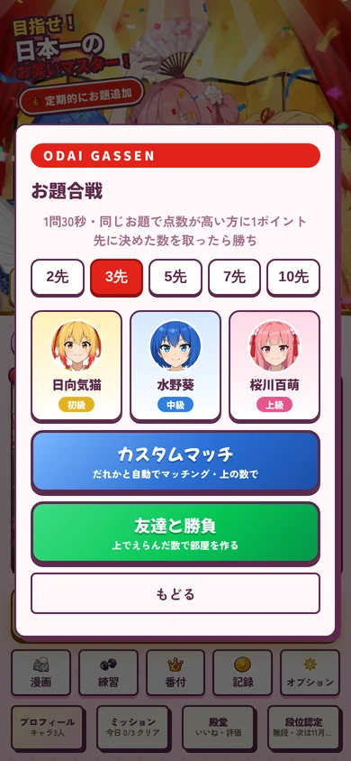
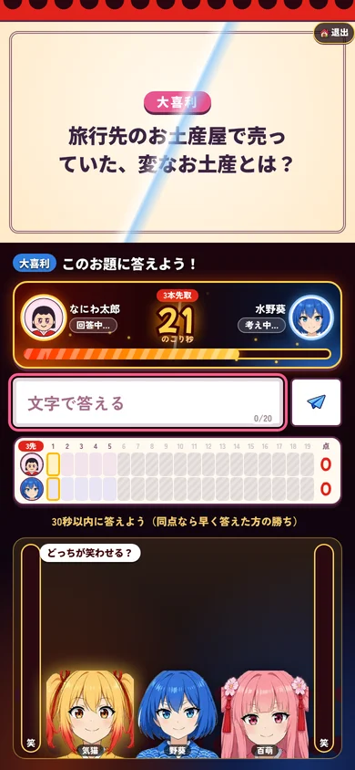
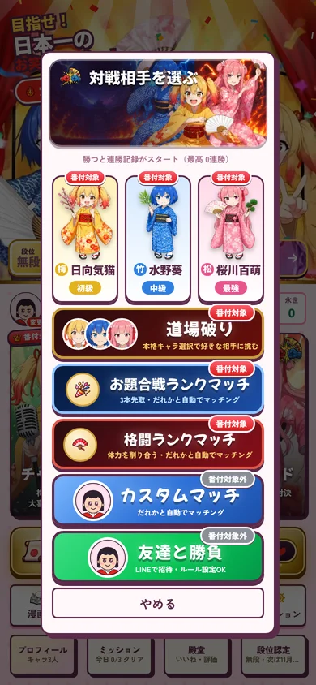
ひと言の重みが、勝敗を分ける！
思いついたら即回答！1問わずか数十秒で、AIがあなたの笑いをジャッジします。
写真・イラスト・質問など、毎回ちがうお題が出ます。制限時間のあいだに考えよう。
文字で入力、マイクで声、4つから選ぶ四択。好きな答え方でOK。
AIが100点満点で採点。合格点をこえたらクリア！ よい答えは番付や殿堂に載ります。

ボケもツッコミも、大喜利も一発ギャグも。今日はどのお題で笑わせる？お題は定期的に追加されます。
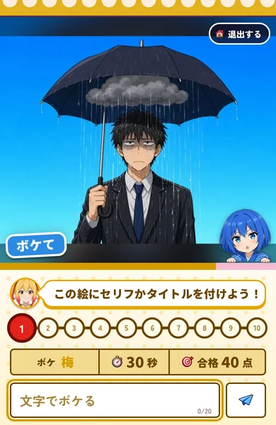
ボケ写真やお題を見て、思いきりボケよう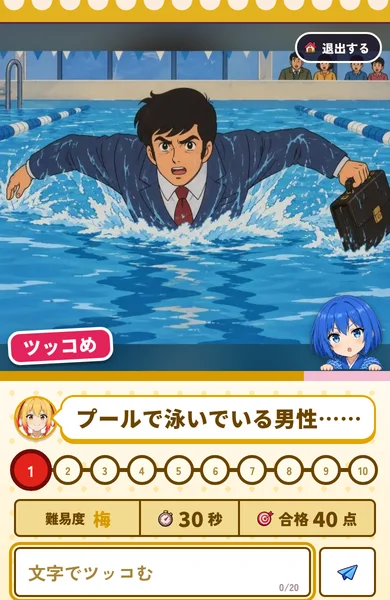
ツッコミボケに、するどくツッコもう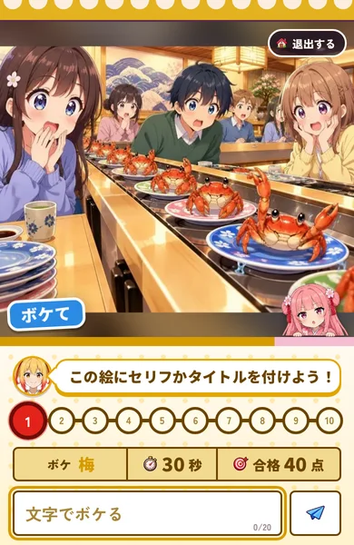
MIXボケかツッコミか、来てからのお楽しみ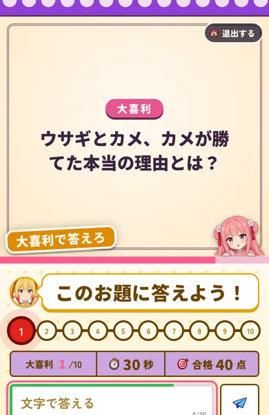
大喜利お題に、ひとことでうまいこと言おう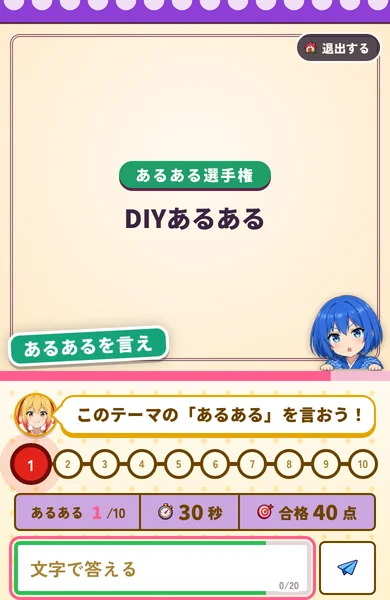
あるある「わかる〜！」と言わせる共感ネタ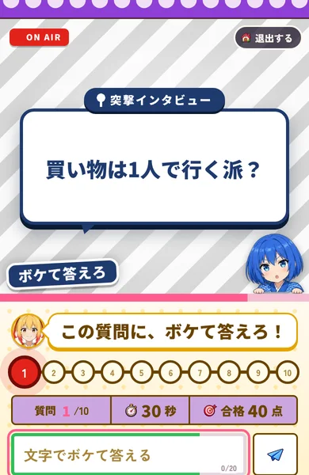
突撃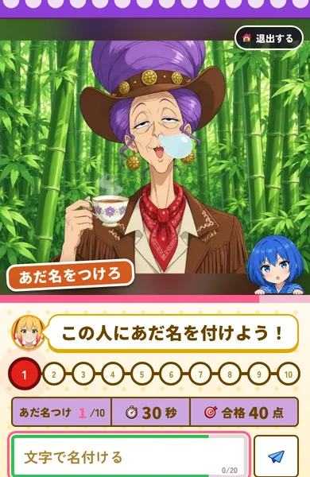
あだ名つけ絵を見て、ぴったりのあだ名をつけよう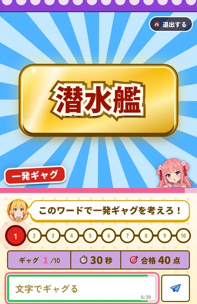
一発ギャグお題の言葉で、一発ギャグをかまそう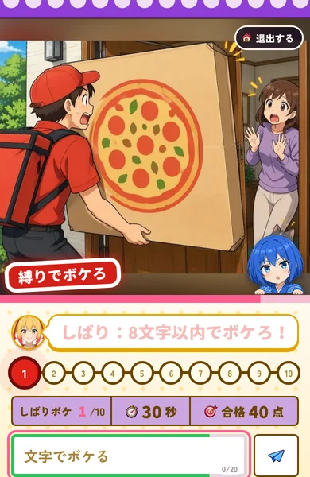
しばりボケ決まりを守りながら、うまくボケよう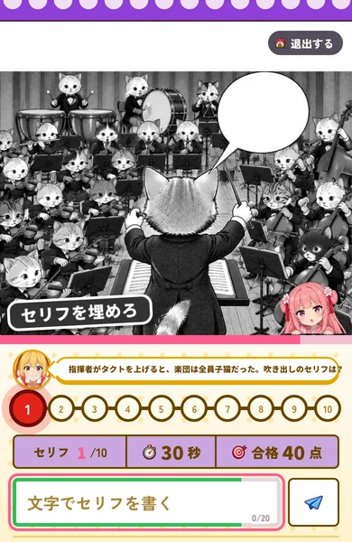
漫画セリフ漫画のコマに、おもしろいセリフを入れよう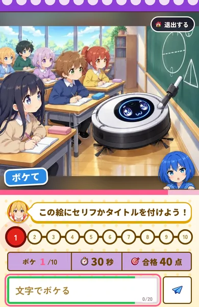
気猫が相手。はじめてでも楽しめる、肩ならしのお題。
葵が相手。ひとひねりした答えが必要になってくる。
百萌が相手。合格点が高い、腕に自信のある人向け。

梅・竹・松の難しさを選んで、お題に挑戦。合格を重ねて結果発表へ。
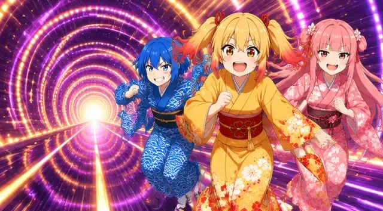
ライフがなくなるまで、どこまでも続く。何問いけるか、自分の限界に挑もう。
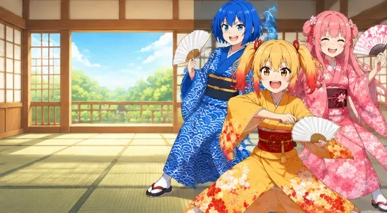
好きなお題を選んで、じっくり練習。苦手なお題の特訓に。
今週の1位は、
あなたかもしれない。
あなたの点数は、全国のプレイヤーといっしょに番付に並びます。期間・部門・お題・難しさごとに分かれているので、得意な分野で上位を狙えます。番付は毎週・毎月入れかわるから、いつからでもトップを目指せます。
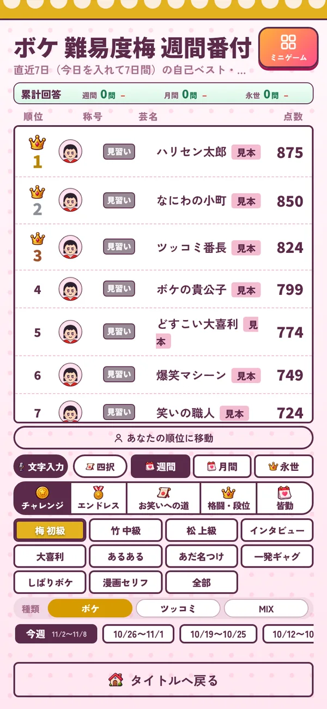
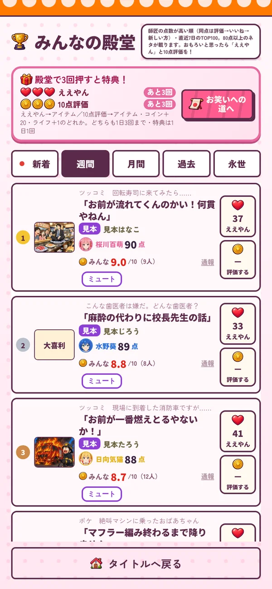
1週間・1か月の番付と、ずっと残る永世の番付。短期決戦も、積み重ねも。
遊び方ごとに番付が分かれています。いちばん得意な部門で頂点へ。
梅・竹・松の難しさや、大喜利・一発ギャグなどのお題ごとにも番付があります。
おもしろい答えは殿堂入り。ほかのプレイヤーの答えに「ええやん」や評価を送れます。
遊ぶほど称号が増え、段位認定で腕前を証明。番付に称号が表示されます。
自分の記録や順位をいつでも確認。タイトル画面に出す番付の項目も選べます。
同じお題で答えて、ウケた一言で相手の体力をけずり合う！必殺技やガードもある、手に汗にぎるお笑いバトル。ランクマッチにも対応！
お笑いシスターズと1対1の勝負。連勝記録をのばそう。
強敵が待つ道場に乗りこみ、勝ち抜いて道場を制覇。
全国のライバルと腕くらべ。勝って番付をグングン上げよう。
友達を招待して対戦。スタンプで会話もできます。
マスを進んで、ステージをクリアしていく修行の旅。道の先には、中ボスやエリアのボスが待ちかまえています。気づけばあなたも、お笑いマスター！

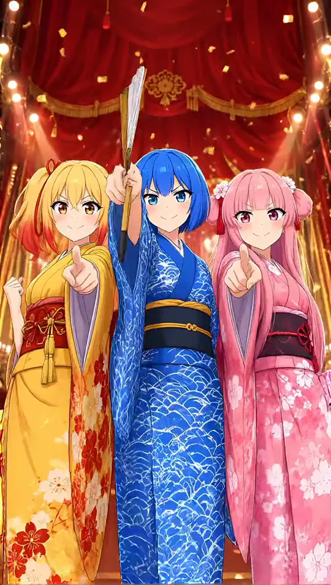
エリアごとに10のマス、マスごとに10のステージ。分かれ道や休憩所もある、すごろくのような旅。
5ステージ目には中ボスが登場。エリアの最後にはボスとの大勝負。
時間を止める、点数アップなど7種類のアイテム。7問連続合格でフィーバー！
ライフがなくなっても、道場で修行すればまた挑戦できます。
連打・暗算・神経衰弱・ブロック崩し・回転ずし…。お題の合間にひと息つける、本気で遊べるミニゲームがぎっしり。自分の記録や番付もあります。
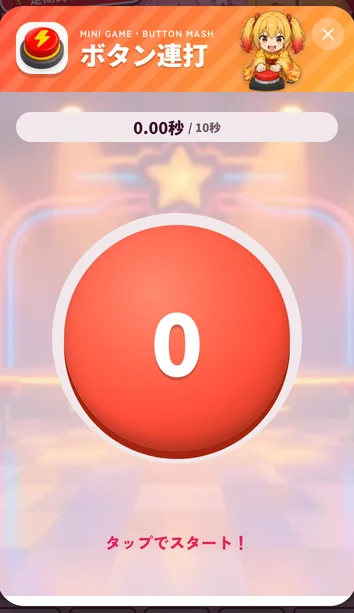
ボタン連打目標回数を最速で連打！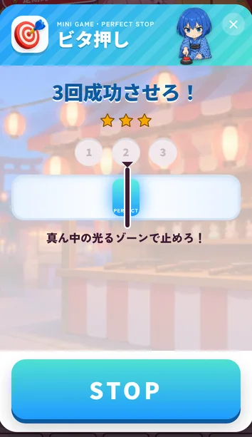
ビタ押し動くバーを真ん中で3回ストップ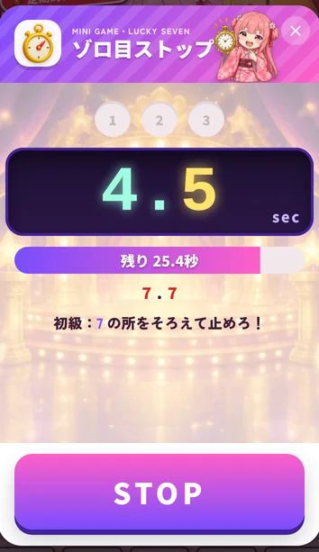
ゾロ目ストップ7がそろう瞬間に止めろ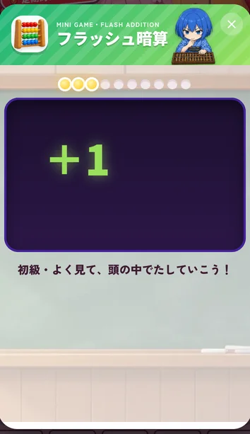
フラッシュ暗算パッと出る数を全部たせ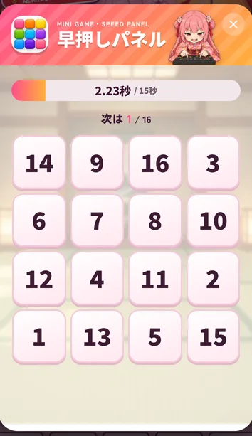
早押しパネル1から順番に早押し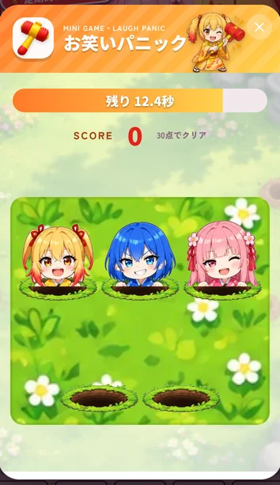
お笑いパニック出てきたシスターズをたたけ！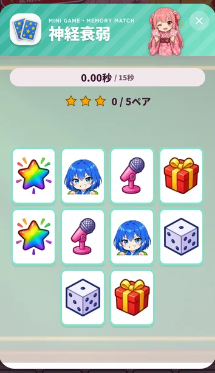
神経衰弱同じ絵のカードをそろえろ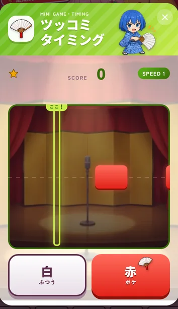
ツッコミタイミング枠に触れたら同じ色のボタン！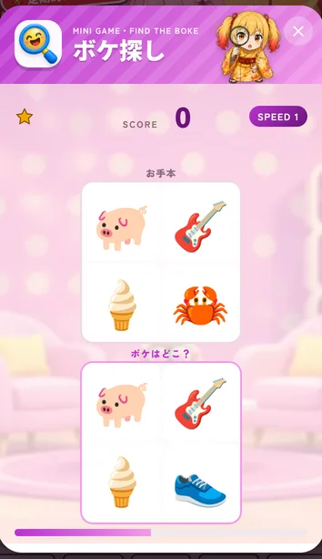
ボケ探し1か所だけちがう絵を見つけろ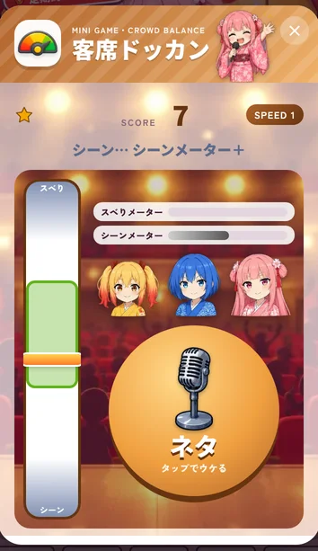
客席ドッカン笑いメーターを緑にキープ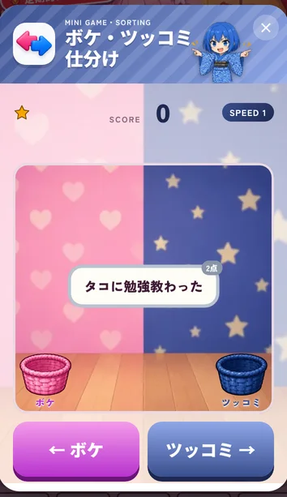
ボケ・ツッコミ仕分けセリフを左右に仕分けろ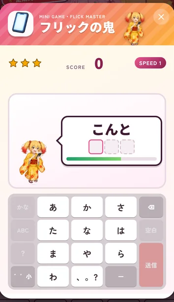
フリックの鬼お題の言葉をフリックで打て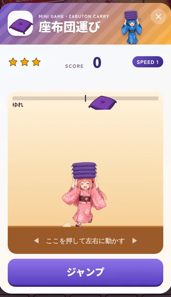
座布団運び落ちてくる座布団を積み上げろ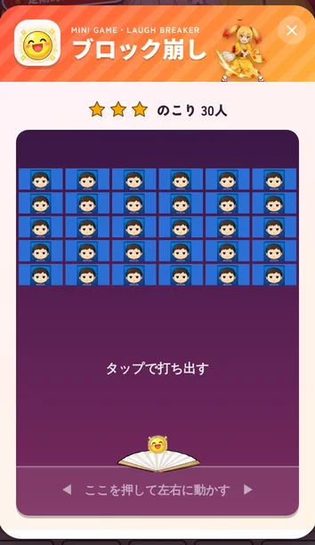
ブロック崩しハリセンで客を笑わせて全部消す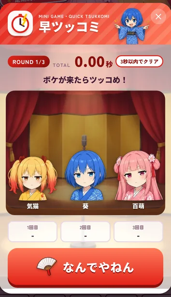
早ツッコミボケが出た瞬間にツッコめ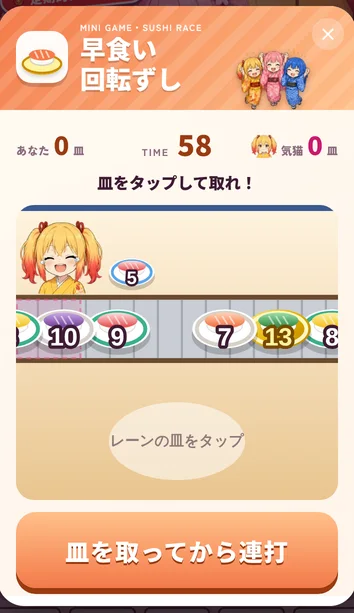
早食い回転ずしシスターズより多く食べろなどなど、笑いの修行がてんこ盛り！
お笑いシスターズの物語を描いた漫画、30話（随時更新）。お笑いへの道を進むと、1話ずつ読めるようになります。
ハリセンでたたく、計算、記憶、ならべかえ…。ひと息つける、いろいろなミニゲームが遊べます。

期間限定のコラボの道。今は「希望の堕天使」を開催中。最後のボスを倒すとギャラリーが開きます。
あなたの一言が、日本中を笑わせる。
iPhoneアプリ版、配信準備中！